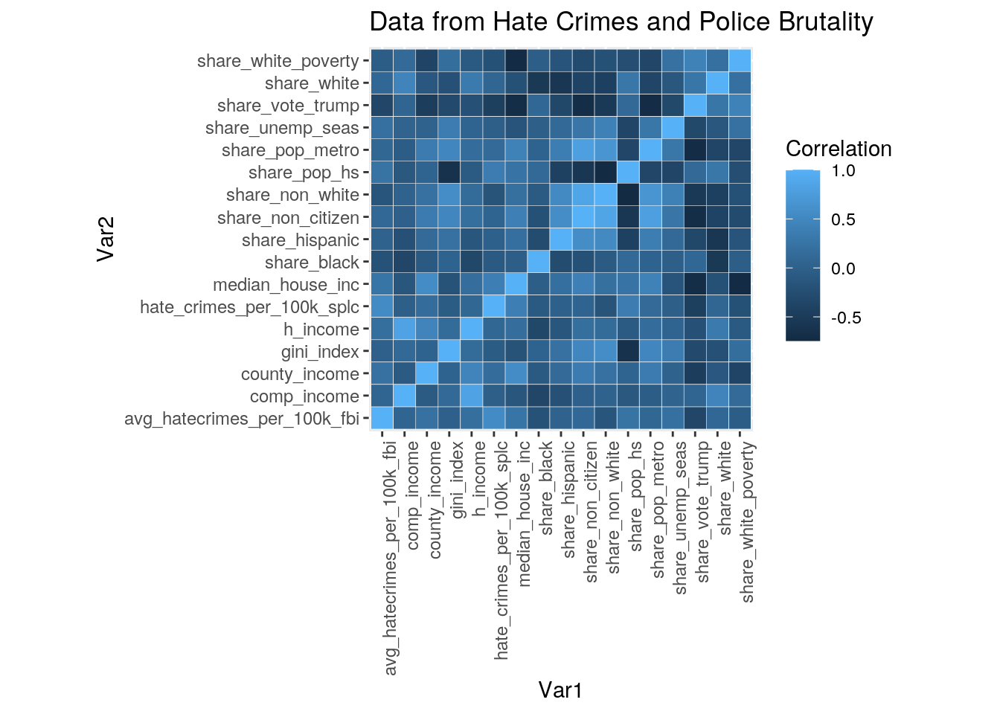
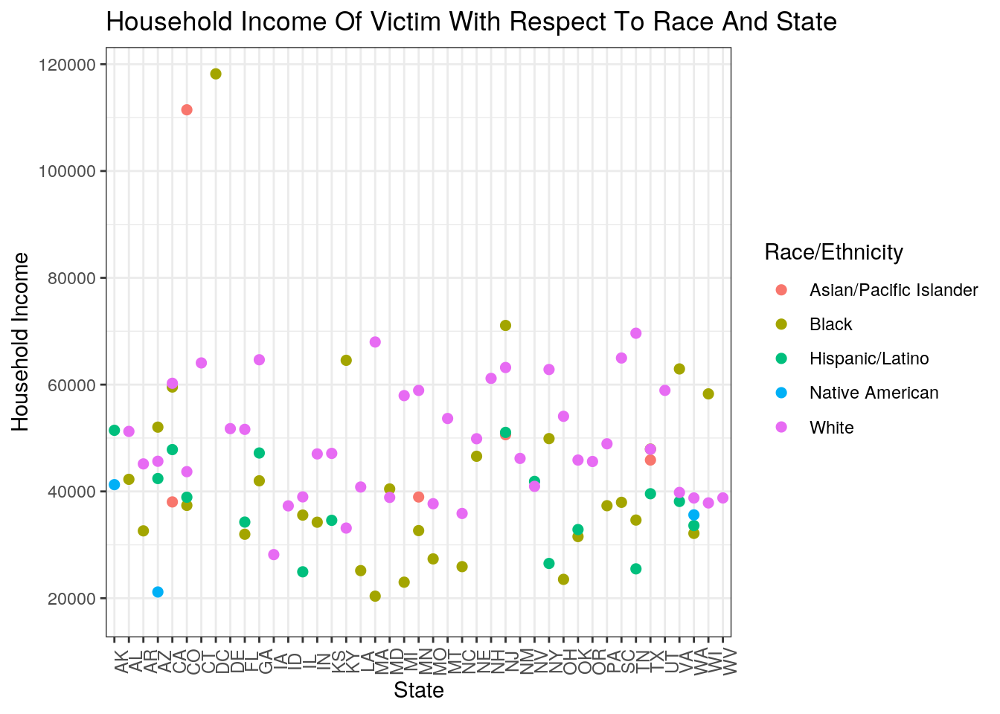
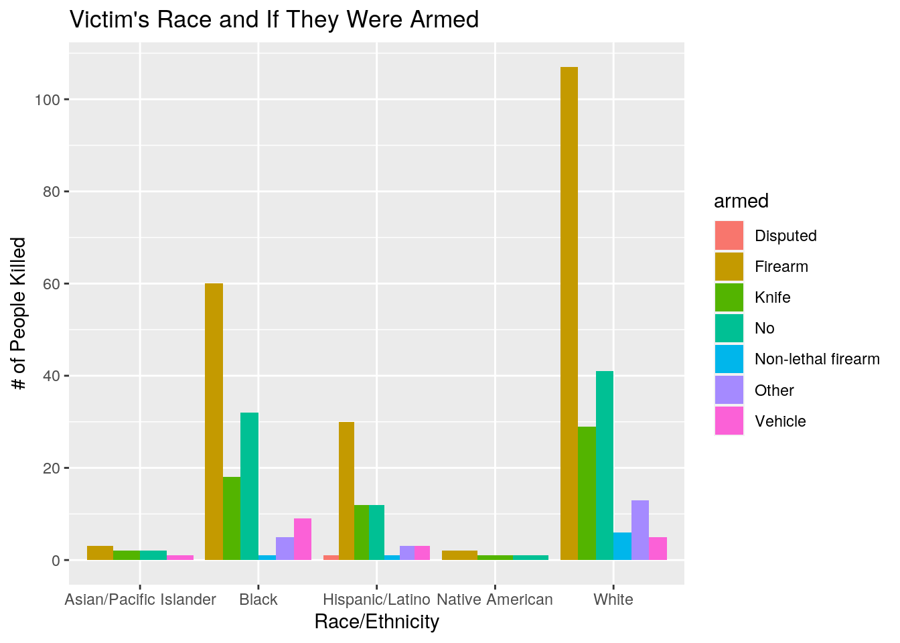
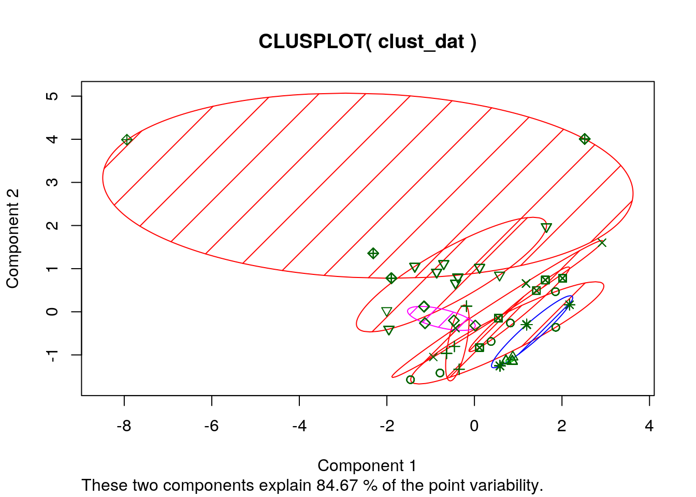

January 1, 0001
# install.packages('fivethirtyeight')
library(fivethirtyeight)
library(tidyverse)
library(ggplot2)
library(cluster)
data(hate_crimes)
data(police_killings)0. Introduction
As a first generation Asian-American, it is heartbreaking to see the increasing amount of division and hate spread throughout The United States of America. This project will analyze two data sets. The first data set observes hate crimes committed in each state and data representative of their respective state such as:the median household income in 2016, the share of the population that is unemployed in 2016, the share of the population that lives in metropolitan areas in 2015, the share of adults that are 25 and older with a high-school degree in 2009, the share of the population that are U.S. citizens in 2015, the share of white residents who are living in poverty in 2015, the Gini Index in 2015, the share of the population that is not white in 2015, the share of 2016 U.S. presidential voters who voted for Donald Trump, Hate crimes per 100,000 population through November 9-18 in 2016, and the average annual hate crimes per 100,000 population between 2010 and 2015. This data was acquired through publicly available data sources via FBI hate crimes data and the Southern Poverty Law Center. The second data set contains information about victims of police shootings such as their name, their gender, their race and ethnicity, when they were murdered, and where they were murdered. This data was acquired from an interactive database titled “The Counted” which was published by the Guardian. I chose these data sets to construct my project over because as previously stated, I am an Asian-American. The U.S. is seeing an astronomical uptick in hate crimes committed against not only immigrants, but all People of Color. I have decided to base my project over these two data sets in hopes of bettering my understanding of the relationship between occurrences of hate crimes and occurrences of police brutality. A potential association I am expecting to observe is states with high levels of hate crimes committed also seeing high levels of fatal police shootings.
1. Tidying
Data is already tidy, tidying used in correlation heatmap.
2. Joining/Merging
# Creation of merged data set
Merged_Data <- hate_crimes %>% full_join(police_killings, by = c(state_abbrev = "state")) %>%
na.omit
Merged_Data %>% na.omit## # A tibble: 400 x 46
## state state_abbrev median_house_inc share_unemp_seas share_pop_metro
## <chr> <chr> <int> <dbl> <dbl>
## 1 Alab… AL 42278 0.06 0.64
## 2 Alab… AL 42278 0.06 0.64
## 3 Alab… AL 42278 0.06 0.64
## 4 Alab… AL 42278 0.06 0.64
## 5 Alab… AL 42278 0.06 0.64
## 6 Alab… AL 42278 0.06 0.64
## 7 Alab… AL 42278 0.06 0.64
## 8 Alab… AL 42278 0.06 0.64
## 9 Alas… AK 67629 0.064 0.63
## 10 Alas… AK 67629 0.064 0.63
## # … with 390 more rows, and 41 more variables: share_pop_hs <dbl>,
## # share_non_citizen <dbl>, share_white_poverty <dbl>, gini_index <dbl>,
## # share_non_white <dbl>, share_vote_trump <dbl>,
## # hate_crimes_per_100k_splc <dbl>, avg_hatecrimes_per_100k_fbi <dbl>,
## # name <chr>, age <int>, gender <chr>, raceethnicity <chr>, month <chr>,
## # day <int>, year <int>, streetaddress <chr>, city <chr>, latitude <dbl>,
## # longitude <dbl>, state_fp <int>, county_fp <int>, tract_ce <int>,
## # geo_id <dbl>, county_id <int>, namelsad <chr>, lawenforcementagency <chr>,
## # cause <chr>, armed <chr>, pop <int>, share_white <dbl>, share_black <dbl>,
## # share_hispanic <dbl>, p_income <int>, h_income <int>, county_income <int>,
## # comp_income <dbl>, county_bucket <int>, nat_bucket <int>, pov <dbl>,
## # urate <dbl>, college <dbl>I used full_join to completely merge the two data sets based on their common variable of the state in which either the hate crime or the fatal police shooting occurred. The hate_crimes data set contained 51 observations, 1 for each state with an additional observation for the District of Columbia. The police_killings data set contained 467 observations, 1 for each victim of police brutality. I chose the state variable because I want to isolate the location in which these two afflictions occur. With the two data sets merged, it will be easier to highlight states that have high levels of deaths due to police. If a particular state has a relatively high level of hate crimes committed in it, I want to know if fatal police activity also occur at high rates and whether other states would follow this trend. No cases were dropped.
3. Wrangling
# Usage of the 6 core dplyer functions (filter, select,
# arrange, group_by, mutate, summarize)
Merged_Data %>% filter(state_abbrev == "TX") %>% summarize(victims = n())## # A tibble: 1 x 1
## victims
## <int>
## 1 37Merged_Data %>% select(state_abbrev, raceethnicity, armed)## # A tibble: 400 x 3
## state_abbrev raceethnicity armed
## <chr> <chr> <chr>
## 1 AL Black No
## 2 AL Black Knife
## 3 AL Black No
## 4 AL White Firearm
## 5 AL White Firearm
## 6 AL White Other
## 7 AL Black Firearm
## 8 AL White No
## 9 AK Hispanic/Latino Knife
## 10 AK Native American Knife
## # … with 390 more rowsMerged_Data %>% arrange(-avg_hatecrimes_per_100k_fbi) %>% select(state_abbrev,
avg_hatecrimes_per_100k_fbi) %>% distinct(state_abbrev, .keep_all = TRUE)## # A tibble: 43 x 2
## state_abbrev avg_hatecrimes_per_100k_fbi
## <chr> <dbl>
## 1 DC 11.0
## 2 MA 4.80
## 3 NJ 4.41
## 4 KY 4.21
## 5 WA 3.82
## 6 CT 3.77
## 7 MN 3.61
## 8 AZ 3.41
## 9 OR 3.39
## 10 OH 3.24
## # … with 33 more rowsMerged_Data %>% group_by(state_abbrev, raceethnicity) %>% summarize(count = n())## # A tibble: 95 x 3
## # Groups: state_abbrev [43]
## state_abbrev raceethnicity count
## <chr> <chr> <int>
## 1 AK Hispanic/Latino 1
## 2 AK Native American 1
## 3 AL Black 4
## 4 AL White 4
## 5 AR Black 1
## 6 AR White 2
## 7 AZ Black 1
## 8 AZ Hispanic/Latino 6
## 9 AZ Native American 2
## 10 AZ White 13
## # … with 85 more rowsMerged_Data %>% mutate(share_non_poverty_white = 1 - share_white_poverty)## # A tibble: 400 x 47
## state state_abbrev median_house_inc share_unemp_seas share_pop_metro
## <chr> <chr> <int> <dbl> <dbl>
## 1 Alab… AL 42278 0.06 0.64
## 2 Alab… AL 42278 0.06 0.64
## 3 Alab… AL 42278 0.06 0.64
## 4 Alab… AL 42278 0.06 0.64
## 5 Alab… AL 42278 0.06 0.64
## 6 Alab… AL 42278 0.06 0.64
## 7 Alab… AL 42278 0.06 0.64
## 8 Alab… AL 42278 0.06 0.64
## 9 Alas… AK 67629 0.064 0.63
## 10 Alas… AK 67629 0.064 0.63
## # … with 390 more rows, and 42 more variables: share_pop_hs <dbl>,
## # share_non_citizen <dbl>, share_white_poverty <dbl>, gini_index <dbl>,
## # share_non_white <dbl>, share_vote_trump <dbl>,
## # hate_crimes_per_100k_splc <dbl>, avg_hatecrimes_per_100k_fbi <dbl>,
## # name <chr>, age <int>, gender <chr>, raceethnicity <chr>, month <chr>,
## # day <int>, year <int>, streetaddress <chr>, city <chr>, latitude <dbl>,
## # longitude <dbl>, state_fp <int>, county_fp <int>, tract_ce <int>,
## # geo_id <dbl>, county_id <int>, namelsad <chr>, lawenforcementagency <chr>,
## # cause <chr>, armed <chr>, pop <int>, share_white <dbl>, share_black <dbl>,
## # share_hispanic <dbl>, p_income <int>, h_income <int>, county_income <int>,
## # comp_income <dbl>, county_bucket <int>, nat_bucket <int>, pov <dbl>,
## # urate <dbl>, college <dbl>, share_non_poverty_white <dbl>Merged_Data %>% summarize(min(avg_hatecrimes_per_100k_fbi), max(avg_hatecrimes_per_100k_fbi))## # A tibble: 1 x 2
## `min(avg_hatecrimes_per_100k_fbi)` `max(avg_hatecrimes_per_100k_fbi)`
## <dbl> <dbl>
## 1 0.412 11.0# Summary Statistics (Mean, Median, Minimum, Maximum, and
# Standard Deviation) 1-5
Merged_Data %>% summarize(mean_hs_diploma = mean(share_pop_hs),
median_hs_diploma = median(share_pop_hs), minimum_hs_diploma = min(share_pop_hs),
maximum_hs_diploma = max(share_pop_hs), Std_Dev_hs_diploma = sd(share_pop_hs))## # A tibble: 1 x 5
## mean_hs_diploma median_hs_diplo… minimum_hs_dipl… maximum_hs_dipl…
## <dbl> <dbl> <dbl> <dbl>
## 1 0.847 0.845 0.799 0.915
## # … with 1 more variable: Std_Dev_hs_diploma <dbl>Merged_Data %>% summarize(mean_median_house_income = mean(median_house_inc),
median_median_house_income = median(median_house_inc), minimum_median_house_income = min(median_house_inc),
maximum_median_house_income = max(median_house_inc), Std_Dev_median_house_income = sd(median_house_inc))## # A tibble: 1 x 5
## mean_median_hou… median_median_h… minimum_median_… maximum_median_…
## <dbl> <dbl> <int> <int>
## 1 54415. 53875 39552 76165
## # … with 1 more variable: Std_Dev_median_house_income <dbl>Merged_Data %>% summarize(mean_unemployed = mean(share_unemp_seas),
median_unemployed = median(share_unemp_seas), minimum_unemployed = min(share_unemp_seas),
maximum_unemployed = max(share_unemp_seas), Std_Dev_unemployed = sd(share_unemp_seas))## # A tibble: 1 x 5
## mean_unemployed median_unemploy… minimum_unemplo… maximum_unemplo…
## <dbl> <dbl> <dbl> <dbl>
## 1 0.0522 0.052 0.029 0.073
## # … with 1 more variable: Std_Dev_unemployed <dbl>Merged_Data %>% summarize(mean_non_citizen = mean(share_non_citizen),
median_non_citizen = median(share_non_citizen), minimum_non_citizen = min(share_non_citizen),
maximum_non_citizen = max(share_non_citizen), Std_Dev_non_citizen = sd(share_non_citizen))## # A tibble: 1 x 5
## mean_non_citizen median_non_citi… minimum_non_cit… maximum_non_cit…
## <dbl> <dbl> <dbl> <dbl>
## 1 0.0760 0.08 0.01 0.13
## # … with 1 more variable: Std_Dev_non_citizen <dbl>Merged_Data %>% summarize(mean_non_white = mean(share_non_white),
median_non_white = median(share_non_white), minimum_non_white = min(share_non_white),
maximum_non_white = max(share_non_white), Std_Dev_non_white = sd(share_non_white))## # A tibble: 1 x 5
## mean_non_white median_non_white minimum_non_whi… maximum_non_whi…
## <dbl> <dbl> <dbl> <dbl>
## 1 0.411 0.42 0.07 0.63
## # … with 1 more variable: Std_Dev_non_white <dbl># 6-10
Merged_Data %>% summarize(mean_voted_trump = mean(share_vote_trump),
median_voted_trump = median(share_vote_trump), minimum_voted_trump = min(share_vote_trump),
maximum_voted_trump = max(share_vote_trump), Std_Dev_voted_trump = sd(share_vote_trump))## # A tibble: 1 x 5
## mean_voted_trump median_voted_tr… minimum_voted_t… maximum_voted_t…
## <dbl> <dbl> <dbl> <dbl>
## 1 0.472 0.49 0.04 0.69
## # … with 1 more variable: Std_Dev_voted_trump <dbl>Merged_Data %>% summarize(mean_avg_hatecrimes_btwn_2010_2015 = mean(avg_hatecrimes_per_100k_fbi),
median_avg_hatecrimes_btwn_2010_2015 = median(avg_hatecrimes_per_100k_fbi),
minimum_avg_hatecrimes_btwn_2010_2015 = min(avg_hatecrimes_per_100k_fbi),
maximum_avg_hatecrimes_btwn_2010_2015 = max(avg_hatecrimes_per_100k_fbi),
Std_Dev_avg_hatecrimes_btwn_2010_2015 = sd(avg_hatecrimes_per_100k_fbi))## # A tibble: 1 x 5
## mean_avg_hatecr… median_avg_hate… minimum_avg_hat… maximum_avg_hat…
## <dbl> <dbl> <dbl> <dbl>
## 1 2.09 2.04 0.412 11.0
## # … with 1 more variable: Std_Dev_avg_hatecrimes_btwn_2010_2015 <dbl>Merged_Data %>% summarize(mean_gini_index = mean(gini_index),
median_gini_index = median(gini_index), minimum_gini_index = min(gini_index),
maximum_gini_index = max(gini_index), Std_Dev_gini_index = sd(gini_index))## # A tibble: 1 x 5
## mean_gini_index median_gini_ind… minimum_gini_in… maximum_gini_in…
## <dbl> <dbl> <dbl> <dbl>
## 1 0.461 0.464 0.419 0.532
## # … with 1 more variable: Std_Dev_gini_index <dbl>Merged_Data %>% group_by(raceethnicity) %>% summarize(mean_avg_hatecrimes_btwn_2010_2015 = mean(avg_hatecrimes_per_100k_fbi),
median_avg_hatecrimes_btwn_2010_2015 = median(avg_hatecrimes_per_100k_fbi),
minimum_avg_hatecrimes_btwn_2010_2015 = min(avg_hatecrimes_per_100k_fbi),
maximum_avg_hatecrimes_btwn_2010_2015 = max(avg_hatecrimes_per_100k_fbi),
Std_Dev_avg_hatecrimes_btwn_2010_2015 = sd(avg_hatecrimes_per_100k_fbi))## # A tibble: 5 x 6
## raceethnicity mean_avg_hatecr… median_avg_hate… minimum_avg_hat…
## <chr> <dbl> <dbl> <dbl>
## 1 Asian/Pacifi… 2.44 2.40 0.753
## 2 Black 1.94 1.72 0.412
## 3 Hispanic/Lat… 2.11 2.40 0.412
## 4 Native Ameri… 3.08 3.41 1.66
## 5 White 2.15 2.11 0.412
## # … with 2 more variables: maximum_avg_hatecrimes_btwn_2010_2015 <dbl>,
## # Std_Dev_avg_hatecrimes_btwn_2010_2015 <dbl>Merged_Data %>% group_by(raceethnicity, armed) %>% summarize(mean_household_income = mean(h_income),
median_household_income = median(h_income), minimum_household_income = min(h_income),
maximum_household_income = max(h_income), Std_Dev_household_income = sd(h_income))## # A tibble: 26 x 7
## # Groups: raceethnicity [5]
## raceethnicity armed mean_household_… median_househol… minimum_househo…
## <chr> <chr> <dbl> <dbl> <int>
## 1 Asian/Pacifi… Fire… 63936. 41385 38958
## 2 Asian/Pacifi… Knife 36356 36356 15212
## 3 Asian/Pacifi… No 46206. 46206. 41786
## 4 Asian/Pacifi… Vehi… 49973 49973 49973
## 5 Black Fire… 40209. 35616. 11378
## 6 Black Knife 43986. 50268 19988
## 7 Black No 48151. 35993 17545
## 8 Black Non-… 63444 63444 63444
## 9 Black Other 40863 36070 20556
## 10 Black Vehi… 36387. 37109 10290
## # … with 16 more rows, and 2 more variables: maximum_household_income <int>,
## # Std_Dev_household_income <dbl>Using the six core dplyr functions, I manipulated the data in order to discover various results. Filtering only for Texas, I found that 37 people were killed in 2015. Using arrange, I found that D.C. has the highest average amount of hate crimes per 100k people during the stretch of 2010-2015. In fact, 7 of the top 10 states with the highest average hate crimes per 100k people were states on the Eastern side of the United states, with the 3 Western states being Washington, Arizona, and Oregon respectively. Texas, surprisingly, ranks near the bottom at 0.7527683 hate crimes per 100k people. Using group_by, I organized the data to display each state and the amount of people killed due to police brutality per race/ethnicity. In 2015, California found itself at the top in the number of people killed for each race, with Asian/Pacific Islander people at 3, Black people at 14, Hispanic/Latino people at 25, and White people at 27. Using summarize, through the stretch of 2010-2015, the lowest average hate crimes committed per 100k people for a state was 0.4120118 and the highest was 10.95348. Using the summary statistics of mean, median, min, max, and standard deviation, I found interesting results. The average proportion of non-white citizens in a state was 0.411475 of the population, the median was 0.42, the minimum of any state was 0.07, the maximum of any state was 0.63, and the standard deviation was 0.1486803. The average proportion of voting citizens who voted for Trump in the 2016 election in all states was 0.47215, the median was 0.49, the minimum of any state was 0.04, the maximum of any state was 0.69, and the standard deviation was 0.1008877. These two results represents the massive divide in this country. A state can have a non-white population of anywhere from 7% of the population to 63% of the population. This huge range shows the difference in an individual who grows up and lives with a large amount of diversity and an individual who doesn’t, and could potentially account for why hate crimes and police brutality are in an uptick as of recently. Grouping by the race/ethnicity and by whether the victim was armed or not, it can be seen that the average household income for unarmed Hispanic/Latino and Native American Victims were the lowest compared to if they were armed.
4. Visualizing
mydata <- Merged_Data %>% select(-year, -urate, -tract_ce, -state_fp,
-pop, -pov, -p_income, -nat_bucket, -longitude, -latitude,
-geo_id, -day, -county_bucket, -county_id, -county_fp, -college,
-age) %>% select_if(is_numeric)
cormat <- mydata %>% cor(use = "pair")
cormat <- cormat %>% as.data.frame %>% rownames_to_column("Var1") %>%
pivot_longer(., cols = 2:ncol(.), names_to = "Var2", values_to = "Correlation")
cormat %>% ggplot(aes(Var1, Var2, fill = Correlation)) + geom_tile(color = "white") +
theme(axis.text.y = element_text(size = 9)) + theme(axis.text.x = element_text(angle = 90,
hjust = 1, size = 9)) + coord_fixed() + labs(title = "Data from Hate Crimes and Police Brutality") This correlation heatmap shows that there is a relationship between the proportion of White people in a population and the average income of the household, in which the higher the proportion the higher the average income of the household. Inversely, the higher the proportion of Black people in a population the lower the average income of the household. There is also a high correlation between the proportion of impoverished White population and the proportion of the voting population who voted for Trump in the 2016 election.
Merged_Data %>% ggplot(aes(x = state_abbrev, y = h_income, color = raceethnicity)) +
geom_point(stat = "summary", size = 2) + labs(x = "State",
y = "Household Income", color = "Race/Ethnicity", title = "Household Income Of Victim With Respect To Race And State") +
theme_bw() + theme(axis.text.x = element_text(angle = 90,
size = 9)) + scale_y_continuous(breaks = seq(0, 160000, by = 20000)) This plot presents the household income of each individual that was slain by police with respect to their race/ethnicity and the state it occurred in. This plot shows that Black individuals that are killed by police typically have a lower pay than the White individuals who were also killed. This can be interpreted in that violent police action will occur more often in impoverished Black neighborhoods than impoverished White neighborhoods across the United States. There is much more fatal police action to lower income individuals than the comparatively higher income individuals. This can be interpreted that fatal police action is more often seen in poorer areas of the United States.
Merged_Data %>% ggplot(aes(x = raceethnicity, fill = armed)) +
geom_bar(position = "dodge") + labs(x = "Race/Ethnicity",
y = "# of People Killed", color = "Armed", title = "Victim's Race and If They Were Armed") +
scale_y_continuous(breaks = seq(0, 140, by = 20)) This plot shows the victim’s race and whether they were armed or not. A clear pattern to be seen is that most people of each race/ethnicity that were killed by police had a firearm on them. While it can be said that White individuals are killed the most by police, they are also the race/ethnicity that most frequently has a firearm with them at the time of their murder. Despite having less overall deaths compared to White individuals, Black individuals are just slightly below in the amount of unarmed deaths. Asian/Pacific Islander and Native American individuals see generally the same trend in which victims with firearms account for the highest number of deaths respective to their race/ethnicity, however they also see the lowest total amount of deaths. It should also be noted that Black individuals encounter the highest relative deaths with their armament being a vehicle compared to the other races/ethnicities.
5. Dimension Reduction
clust_dat <- Merged_Data %>% dplyr::select(share_vote_trump,
share_white_poverty, avg_hatecrimes_per_100k_fbi)
set.seed(348)
sil_width <- vector() #empty vector to hold mean sil width
for (i in 2:10) {
kms <- kmeans(clust_dat, centers = i) #compute k-means solution
sil <- silhouette(kms$cluster, dist(clust_dat)) #get sil widths
sil_width[i] <- mean(sil[, 3]) #take averages (higher is better)
}
ggplot() + geom_line(aes(x = 1:10, y = sil_width)) + scale_x_continuous(name = "k",
breaks = 1:10) + labs(x = "Number of Clusters", y = "Silhouette Width",
title = "Determining How Many Clusters")
fit <- kmeans(clust_dat, 9)
clusplot(clust_dat, fit$cluster, color = TRUE, shade = TRUE,
labels = 1, lines = 0) As seen in the first plot, the number of clusters to use is 9 because of the highest silhouette width. I found that there is a relation between the proportion of the voting population who voted for Trump in the 2016 election, the proportion of the White population who is in poverty, and the average number of hate crimes committed between 2010 and 2015 per 100k people. There is an 84.57% explanation of the point variability, which is very strong.